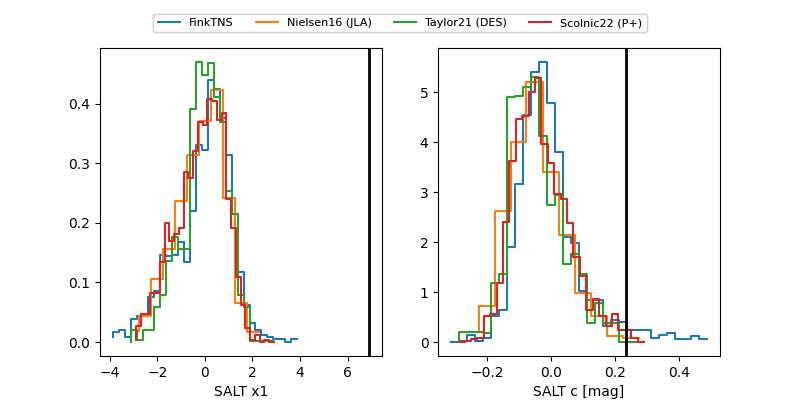

FINK: ZTF25ablgxyi
Lasair: ZTF25ablgxyi
ALeRCE: ZTF25ablgxyi
TNS: 2025wpm
YSE: 2025wpm
ZTF25ablgxyi (ztf,fink)
2025wpm (tns,yse)
ATLAS25kwp (atlas)
equatorial (ra, dec) = (104.7393,+50.09526)
galactic (l, b) = (166.5391,+21.62435)

last atlasc=19.07, atlaso=18.89, ztfg=19.60, ztfr=19.16
1 atlasc, 1 atlaso, 3 ztfg, 4 ztfr detections